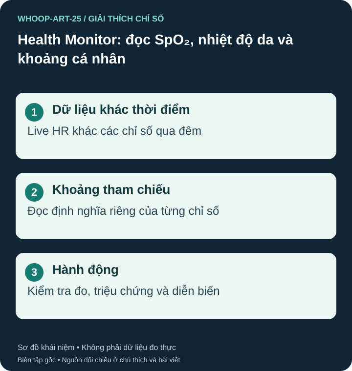

Health Monitor gom những dữ liệu nào?
Hướng dẫn WHOOP liệt kê Live HR cùng RHR, HRV, nhịp thở, SpO₂ và nhiệt độ da. Live HR cập nhật ở hiện tại; nhiều chỉ số còn lại dùng dữ liệu ngủ. Không đọc tất cả như các phép đo đồng thời. Health Monitor hiện thuộc gói Peak và Life theo hướng dẫn hỗ trợ, không có trên One. S38

Trạng thái “within range” là đánh giá theo khoảng của hệ thống cho từng chỉ số, không phải kết quả khám sức khỏe toàn diện. Đừng xem mọi khoảng tham chiếu là cùng một công thức nền cá nhân hay một ngưỡng chẩn đoán. S38
Đừng trộn các loại nhịp tim
Live HR là giá trị ở một thời điểm; Average HR là trung bình trong khoảng được màn hình hoặc bản ghi xác định; RHR là chỉ số nghỉ theo phương pháp của WHOOP. Ví dụ, trung bình cả buổi tập khác trung bình một ngày. Average HR được giải thích ở đây để phân biệt khái niệm, không khẳng định nó là một ô riêng của Health Monitor. Không so nhịp khi đi lại với RHR qua đêm để kết luận tim bất thường. S38 S16
SpO₂ và nhiệt độ da có giới hạn riêng
SpO₂ ước tính tỷ lệ hemoglobin ngoại vi gắn oxy; không đo trực tiếp tổng lượng oxy trong máu hoặc toàn bộ chức năng phổi. FDA lưu ý pulse oximetry có sai số liên quan tuần hoàn, sắc tố da, nhiệt độ và yếu tố khác. Nguồn FDA giải thích công nghệ nói chung, không chứng minh độ chính xác riêng của WHOOP. S39
Nhiệt độ da khác nhiệt độ trung tâm; độ lệch so với nền không phải nhiệt kế đo sốt. Số lệch nền cũng không tự xác nhận nhiễm bệnh, rụng trứng hay có thai. S38
Đọc một cảnh báo theo thứ tự
Ví dụ, khi nhiều chỉ số khác thường, kiểm tra độ vừa dây, thời gian đeo, môi trường và cảm nhận hiện tại. Cách đeo ảnh hưởng chất lượng đo. Health Report có thể xuất xu hướng 30 và 180 ngày theo hướng dẫn hiện tại; lưu báo cáo để trao đổi khi thay đổi kéo dài, không tự uống thuốc dựa vào màu. S48 S38
Khó thở, đau ngực, ngất hoặc lơ mơ cần trợ giúp y tế dù bảng vẫn xanh. Khi lo về SpO₂, dùng đánh giá và thiết bị y tế phù hợp theo hướng dẫn chuyên môn, không chờ thêm dữ liệu wearable. S39
Nguồn tham khảo và phạm vi hỗ trợ
- S38 — WHOOP Support. WHOOP Health Monitor & Report. Phạm vi: Live HR và các chỉ số RHR/HRV/RR/SpO2/nhiệt độ da; Health Monitor thuộc Peak/Life; khoảng và màu cảnh báo không thay chẩn đoán.
- S39 — U.S. Food and Drug Administration. Pulse Oximeters. Phạm vi: Giới hạn đo SpO2 quang học; sắc tố da, tuần hoàn, nhiệt độ; ưu tiên triệu chứng. Không phải kiểm định riêng WHOOP.
- S48 — WHOOP Support. What Affects WHOOP Accuracy?. Phạm vi: Độ vừa dây, vị trí đeo và nhiễu đo ảnh hưởng dữ liệu.
- S16 — MedlinePlus / U.S. National Library of Medicine. Vital signs. Phạm vi: Dấu hiệu sinh tồn phụ thuộc tuổi và bối cảnh; trang này nêu 12–18 lần/phút ở người lớn nghỉ.
Bài biên soạn độc lập bởi Pulse & Vitality; tài liệu WHOOP và các nguồn khác được dùng để tham khảo. Đăng ngày 2026-10-27; nguồn đối chiếu 2026-10-26. Nội dung giáo dục, không thay thế đánh giá, chẩn đoán hoặc điều trị y tế.